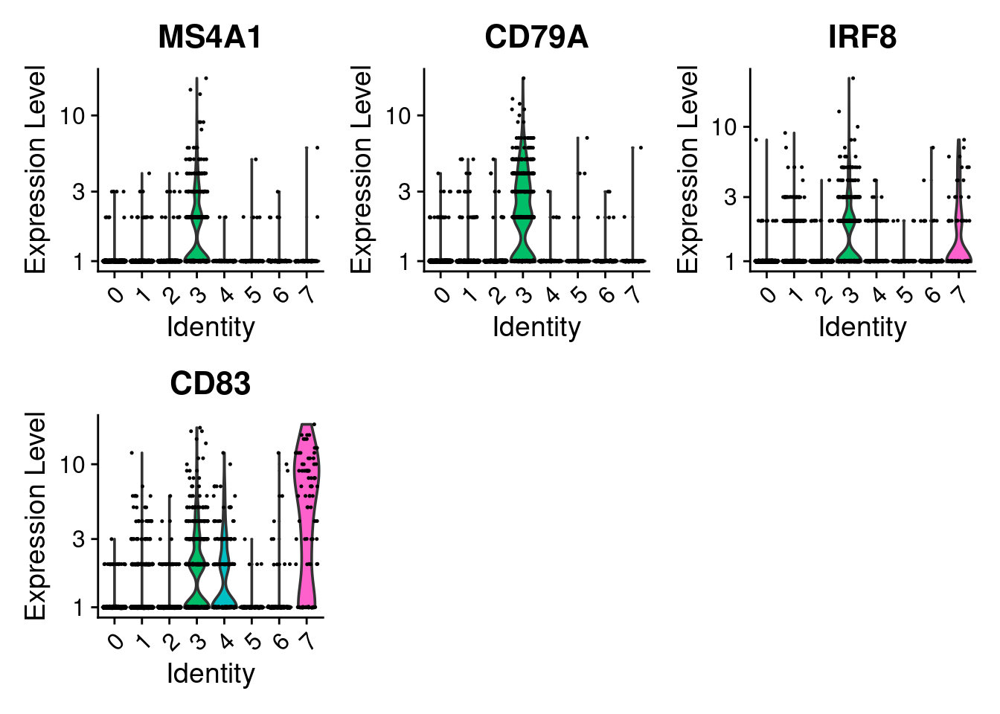
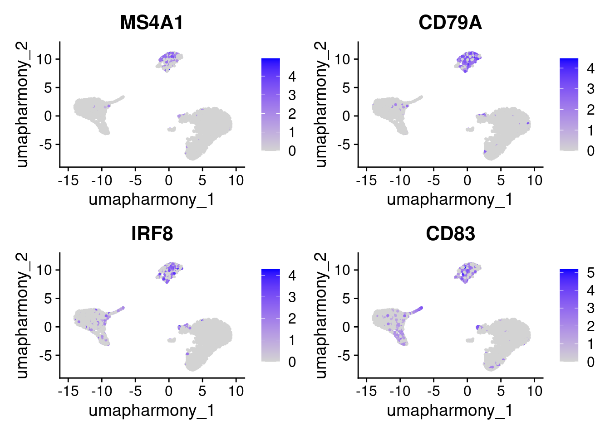
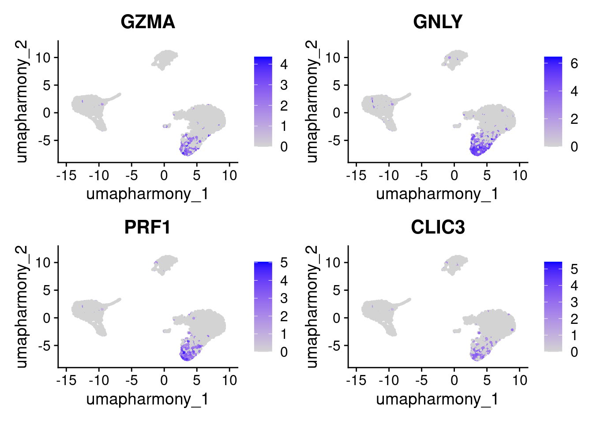
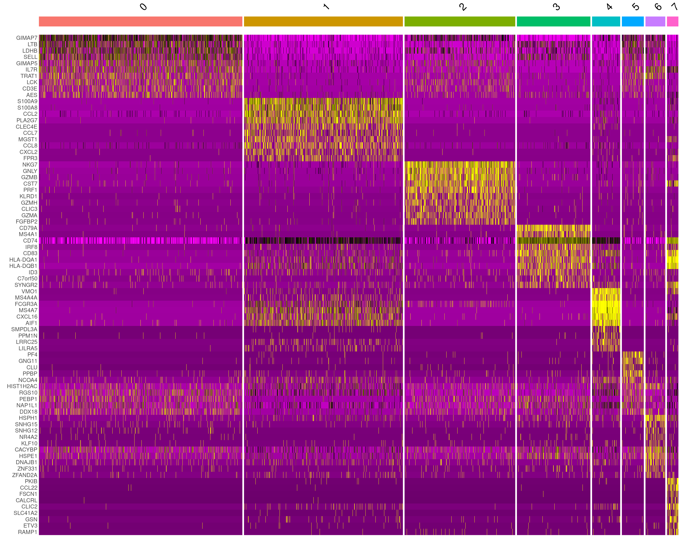
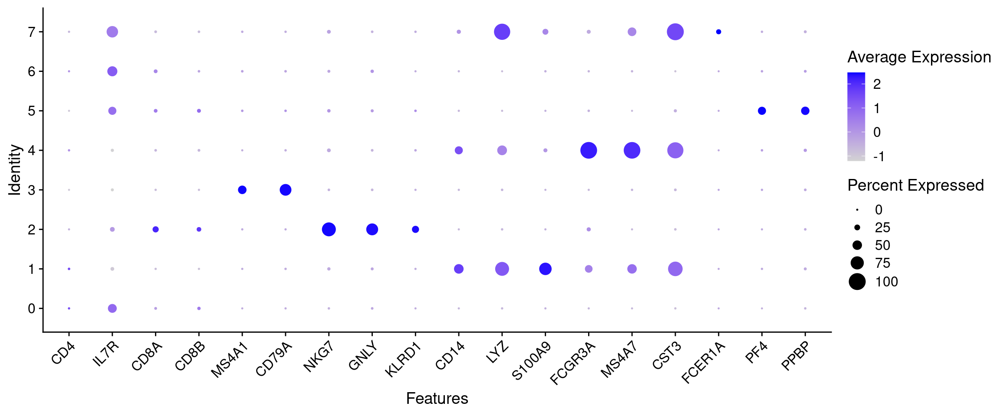
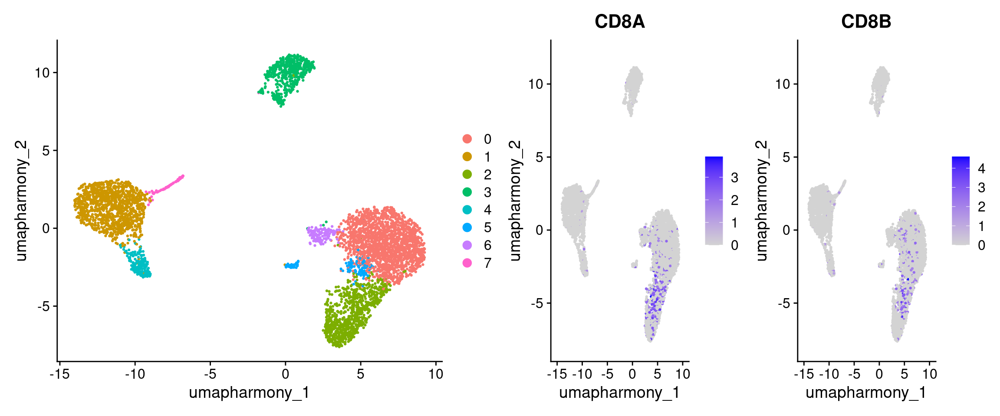
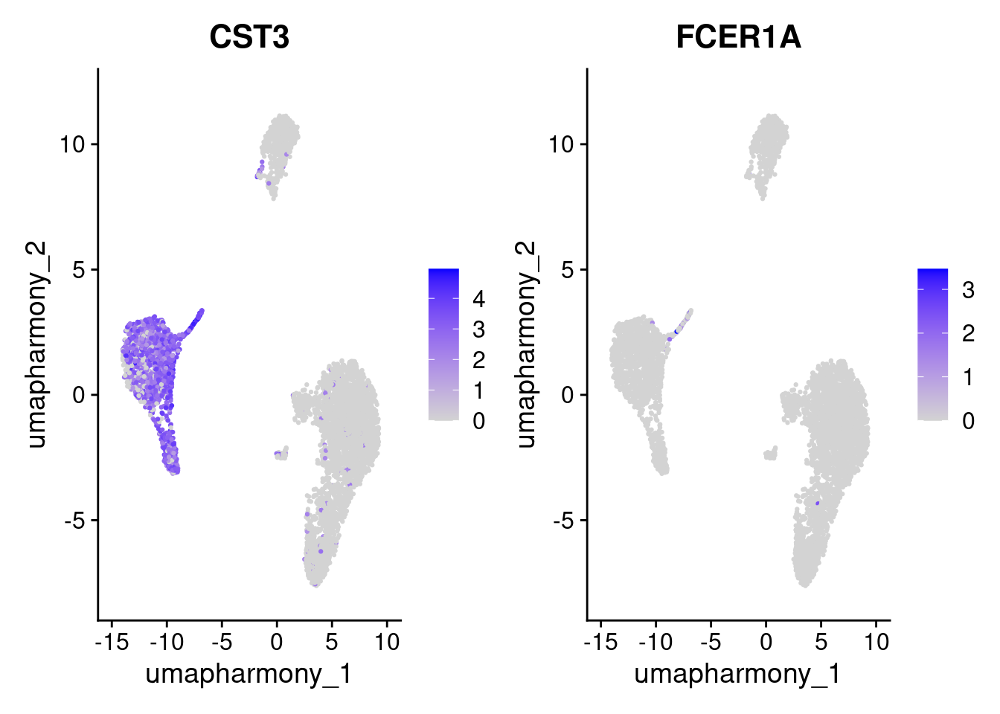
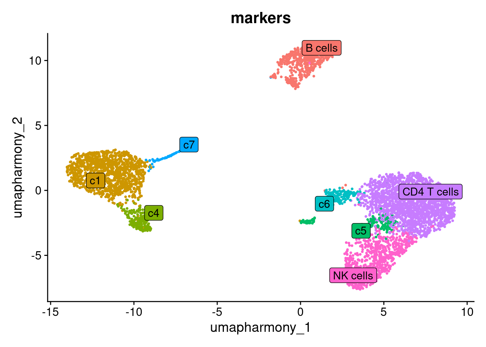
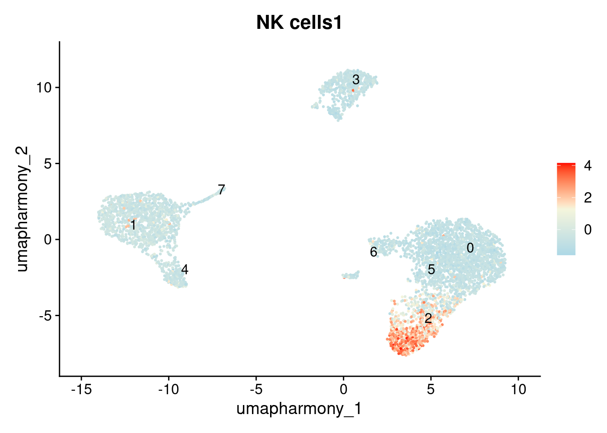

12 Cluster Markers
12.1 Learning outcomes
- Explain how differentially expressed genes can be used as markers to characterise the biological identity of a cluster
- Run
FindMarkersto identify positive markers for each cluster and visualise them - Label clusters to known cell types using canonical marker genes
12.2 Overview
Why do we need to do this?
We now have clusters, but we still do not know what they represent biologically. To interpret them, we need to identify which cell type each cluster represents.
Cells of the same type tend to co-express a characteristic set of genes. Genes that are highly and specifically expressed in one cluster compared to all others are its markers. By finding these differentially expressed genes and matching them against known cell type signatures, we can assign a biological identity to each cluster.
Note: in this example the cell types and their markers are well established in the literature, which makes this step straightforward. In practice, annotating novel or poorly characterised cell types requires careful expert curation.
12.3 Finding differentially expressed features (cluster biomarkers)
The key parameters filter out genes that are unlikely to be informative: min.pct removes genes detected in very few cells, and logfc.threshold removes genes with small average differences between groups. This keeps the analysis focused on the most discriminatory markers.
Seurat can help you find markers that define clusters via differential expression. By default, it identifies positive and negative markers of a single cluster (specified in ident.1), compared to all other cells. FindAllMarkers() automates this process for all clusters, but you can also test groups of clusters vs. each other, or against all cells.
# find all markers of cluster 0
cluster0.markers <- FindMarkers(seurat_object, ident.1 = 0, min.pct = 0.25)
head(cluster0.markers, n = 5)
#> p_val avg_log2FC pct.1 pct.2 p_val_adj
#> HLA-DRA 0 -5.458863 0.071 0.655 0
#> RPS6 0 1.121801 0.997 0.954 0
#> RPL32 0 1.118541 0.996 0.963 0
#> RPS14 0 1.089933 0.996 0.967 0
#> RPS18 0 1.112327 0.996 0.971 0
# find all markers distinguishing cluster 1 from local clusters 2, 5, 6
cluster1.markers <- FindMarkers(seurat_object, ident.1 = 1, ident.2 = c(2, 5, 6), min.pct = 0.25)
head(cluster1.markers, n = 5)
#> p_val avg_log2FC pct.1 pct.2 p_val_adj
#> C15orf48 0 6.312300 0.971 0.054 0
#> HLA-DRA 0 4.518835 0.948 0.113 0
#> SOD2 0 5.116777 0.958 0.134 0
#> FCER1G 0 3.828477 0.970 0.165 0
#> TIMP1 0 5.541923 0.979 0.196 0
# find markers for every cluster compared to all remaining cells, report only the positive ones
seurat_object.markers <- FindAllMarkers(seurat_object, only.pos = TRUE, min.pct = 0.25, logfc.threshold = 0.25)
#> Calculating cluster 0
#> Calculating cluster 1
#> Calculating cluster 2
#> Calculating cluster 3
#> Calculating cluster 4
#> Calculating cluster 5
#> Calculating cluster 6
#> Calculating cluster 7
seurat_object.markers %>%
group_by(cluster) %>%
slice_max(n = 2, order_by = avg_log2FC)
#> # A tibble: 16 × 7
#> # Groups: cluster [8]
#> p_val avg_log2FC pct.1 pct.2 p_val_adj cluster gene
#> <dbl> <dbl> <dbl> <dbl> <dbl> <fct> <chr>
#> 1 7.26e-194 2.08 0.614 0.224 2.59e-189 0 SELL
#> 2 1.22e-220 2.02 0.654 0.222 4.34e-216 0 LTB
#> 3 2.98e-267 7.09 0.352 0.012 1.06e-262 1 CCL7
#> 4 0 7.03 0.671 0.02 0 1 S100A8
#> 5 0 6.16 0.663 0.048 0 2 GNLY
#> 6 1.15e-251 6.02 0.328 0.011 4.10e-247 2 GZMA
#> 7 0 6.27 0.435 0.011 0 3 MS4A1
#> 8 0 6.23 0.651 0.018 0 3 CD79A
#> 9 0 6.75 0.832 0.029 0 4 VMO1
#> 10 0 5.20 0.745 0.036 0 4 MS4A4A
#> 11 7.41e-232 7.08 0.407 0.011 2.64e-227 5 PF4
#> 12 1.53e-202 6.34 0.42 0.016 5.46e-198 5 GNG11
#> 13 1.05e-125 4.65 0.634 0.077 3.74e-121 6 HSPH1
#> 14 1.18e- 71 4.60 0.255 0.019 4.20e- 67 6 NR4A2
#> 15 0 8.86 0.459 0.001 0 7 CCL22
#> 16 6.98e-230 8.26 0.259 0.001 2.49e-225 7 CALCRLTwo plots are most useful for confirming markers:
-
VlnPlot()shows the distribution of expression across clusters. This is useful for checking that a marker is genuinely higher in one cluster and low elsewhere. -
FeaturePlot()overlays expression onto the UMAP. This is useful for confirming that the distribution of the expression is restricted to the expected cluster.
seurat_object.markers %>%
group_by(cluster) %>%
slice_max(n = 4, order_by = avg_log2FC)
#> # A tibble: 32 × 7
#> # Groups: cluster [8]
#> p_val avg_log2FC pct.1 pct.2 p_val_adj cluster gene
#> <dbl> <dbl> <dbl> <dbl> <dbl> <fct> <chr>
#> 1 7.26e-194 2.08 0.614 0.224 2.59e-189 0 SELL
#> 2 1.22e-220 2.02 0.654 0.222 4.34e-216 0 LTB
#> 3 2.60e-101 2.00 0.347 0.102 9.26e- 97 0 TRAT1
#> 4 9.97e-210 1.95 0.663 0.259 3.55e-205 0 LDHB
#> 5 2.98e-267 7.09 0.352 0.012 1.06e-262 1 CCL7
#> 6 0 7.03 0.671 0.02 0 1 S100A8
#> 7 0 6.79 0.701 0.021 0 1 S100A9
#> 8 0 6.27 0.719 0.082 0 1 CCL2
#> 9 0 6.16 0.663 0.048 0 2 GNLY
#> 10 1.15e-251 6.02 0.328 0.011 4.10e-247 2 GZMA
#> # ℹ 22 more rows
cluster3_markers <- c("MS4A1", "CD79A", "IRF8", "CD83")
VlnPlot(seurat_object, features = cluster3_markers)
# you can plot raw counts as well
VlnPlot(seurat_object, features = cluster3_markers, layer = 'counts', log = TRUE)
FeaturePlot(seurat_object, features = cluster3_markers, reduction = "umap_harmony")
cluster2_markers <- c("GZMA", "GNLY", "PRF1", "CLIC3")
FeaturePlot(seurat_object, features = cluster2_markers, reduction = "umap_harmony")
DoHeatmap() gives a cluster-level overview of the top markers across all clusters at once.
maxcells=1500
top10 <- seurat_object.markers %>% group_by(cluster) %>% top_n(n = 10, wt = avg_log2FC)
DoHeatmap(subset(seurat_object, downsample = maxcells), features = top10$gene) + NoLegend()
Worked example: confirming NK markers using the Human Protein Atlas
Cluster 2’s top markers from FindAllMarkers above included GNLY, GZMA, and PRF1. Let’s verify what cells these point to.
- Open https://www.proteinatlas.org/
- Search for
GNLY - Click the Single cell tab
- Look at the cell type group specificity plot.
GNLYshould show highest expression in NK cells. - Cross-check with one or two more candidates (
NKG7,PRF1). - Record the markers you’ll use for NK cells in R:
Rather than searching each gene individually, you can run a functional enrichment analysis on the full list of top markers for a cluster. Tools like enrichR or gprofiler2 map a gene list to GO terms, pathways, and curated cell type signatures in one step, giving you a ranked list of biological processes associated with that cluster. This is especially useful when the top DEGs are not immediately recognisable, or when you are working with a less well-characterised tissue.
12.4 Top-down annotation with a marker table
The top differentially expressed genes from FindAllMarkers tell you what makes each cluster different from the others, however, this is not the same as being a defining marker for a known cell type. A gene can rank highly simply because the other clusters happen not to express it, not because it is a canonical indicator of a specific biology. Clustering is also unsupervised: the boundaries it draws do not necessarily align with meaningful cell types, and two genuinely distinct populations may land in the same cluster at a given resolution.
For these reasons, it is important to take a top-down approach: define the cell types you expect to find in your tissue, look up their canonical markers from curated sources, and then check whether the clusters match those expectations. For a well-characterised tissue, the most efficient way to do this is to start from a curated list of canonical markers: genes whose expression patterns are already established for the cell types we expect.
12.4.1 Step 1: Identify the expected cell types in your sample
Our dataset is peripheral blood mononuclear cells (PBMCs), a well-characterised mix of immune cells circulating in blood. In a PBMC sample you should expect to find:
- CD4+ T cells (helper T cells)
- CD8+ T cells (cytotoxic T cells)
- B cells
- NK (natural killer) cells
- CD14+ monocytes (classical)
- FCGR3A+ monocytes (non-classical)
- Dendritic cells
- Megakaryocytes / platelets
Knowing this up front matters because it tells you which markers to look up, and what to expect in the data
12.4.2 Step 2: Look up canonical markers for each cell type
Canonical markers are genes whose specific expression in a given cell type is well-established. Where to find them:
- PanglaoDB: a curated cell-type marker database
- Human Protein Atlas: gene expression across cell types and tissues
- Published literature for your tissue or cell population
In practice you would search each expected cell type and record a few reliable markers. How many you need depends on the cell type: some populations have single highly-specific markers, but relying on one gene alone can bias annotation or miss cases where that gene is silenced. For today’s workshop this has been done for you. The result is the cell_markers list in Step 3. For your own data, the appropriate markers will depend on the tissue, the species, and the biological question being asked.
12.4.3 Step 3: Build the marker list in R and visualise
This is the named list you’d build from Step 2, mapping each expected cell type to its canonical markers:
cell_markers <- list(
"CD4 T cells" = c("CD4", "IL7R"),
"CD8 T cells" = c("CD8A", "CD8B"),
"B cells" = c("MS4A1", "CD79A"),
"NK cells" = c("NKG7", "GNLY", "KLRD1"),
"CD14+ Monocytes" = c("CD14", "LYZ", "S100A9"),
"FCGR3A+ Monocytes" = c("FCGR3A", "MS4A7"),
"Dendritic cells" = c("CST3", "FCER1A"),
"Megakaryocytes" = c("PF4", "PPBP")
)The most informative plot for annotation is a DotPlot: a compact cluster by gene grid showing both the proportion of expressing cells (dot size) and average expression (colour). It lets us read off all markers and all clusters at once.
all_markers <- unique(unlist(cell_markers))
# Filter to genes actually present in the assay (some symbols may not be in this dataset)
features_to_plot <- all_markers[all_markers %in% rownames(seurat_object)]
DotPlot(seurat_object, features = features_to_plot) + RotatedAxis()
Read the plot column by column: for each marker group, find the cluster (row) where the dots are largest and darkest. That cluster expresses those markers and is likely that cell type.
Exercise: Match cluster numbers with cell labels
Use the DotPlot above to assign a cell-type label to each cluster.
Clusters 0, 2, and 3 are filled in as worked examples:
- Cluster 0 = CD4 T cells: IL7R is the most prominent dot in row 0, consistent with helper T cells expressing the IL-7 receptor.
- Cluster 2 = NK cells: NKG7 and GNLY are both the largest, darkest dots in their columns and are almost entirely restricted to this row.
- Cluster 3 = B cells: CD79A is large and highly specific, almost no signal appears in any other row.
Your turn: fill in clusters 1 and 5.
- Cluster 1: Look at the CD14, LYZ, and S100A9 columns (the CD14+ Monocyte block). Find the row with medium-to-large dots across all three.
- Cluster 5: Look at the PF4 and PPBP columns (the two rightmost columns). Find the row where these are the only visible dots in the plot.
Clusters 6 and 7 are harder to call from the DotPlot alone. Use the FeaturePlots below first, then come back and fill in your answers.
Cluster 4 is ambiguous. Read the discussion below before filling it in.
12.4.4 Explore: clusters 6 and 7
Cluster 6 has a small CD8A signal on the DotPlot. On the UMAP, CD8+ T cells should occupy a distinct region near the T-cell area, clearly separated from the NK cells (cluster 2). However, on the feature plot it appears only a small proportion of cells in cluster 6 express it. We leave this as an ambiguous cluster
DimPlot(seurat_object, reduction = "umap_harmony") |
FeaturePlot(seurat_object, features = cell_markers[["CD8 T cells"]], reduction = "umap_harmony")
Cluster 7 shows LYZ (a broad myeloid marker) alongside CST3 and FCER1A, which are more specific for dendritic cells. Dendritic cells are a small population - look for a compact region on the UMAP that lights up for both CST3 and FCER1A but is distinct from the monocyte clusters:
FeaturePlot(seurat_object, features = cell_markers[["Dendritic cells"]], reduction = "umap_harmony")
12.4.5 Discuss: cluster 4
Cluster 4 shows large dots for both classical monocyte markers (CD14, LYZ, S100A9) and non-classical monocyte markers (FCGR3A, MS4A7). This co-expression pattern suggests cluster 4 may represent a transitional monocyte population sitting between classical (CD14+) and non-classical (FCGR3A+) monocytes, a known intermediate population in blood.
12.4.6 Fill in your answers
Idents(seurat_object) <- seurat_object$RNA_snn_res.0.6
new.cluster.ids <- c(
"0" = "CD4 T cells",
"1" = "c1", # CD14, LYZ, S100A9
"2" = "NK cells",
"3" = "B cells",
"4" = "c4", # see discussion above
"5" = "c5", # PF4, PPBP
"6" = "c6", # CD8A, CD8B (see FeaturePlot above)
"7" = "c7" # CST3, FCER1A (see FeaturePlot above)
)If you did not complete the exercise above, open scripts/catchup_script.R and run the ## Cluster markers section to set new.cluster.ids before continuing.
Apply your labels and visualise the annotated UMAP:
seurat_object@meta.data$markers <- new.cluster.ids[as.character(seurat_object$RNA_snn_res.0.6)]
DimPlot(seurat_object, reduction = "umap_harmony", group.by = "markers", label = TRUE, pt.size = 0.5, label.box = T, repel = T) + NoLegend()
12.5 Verifying a cluster’s identity with AddModuleScore
Visual inspection of a DotPlot is fast, but for ambiguous clusters it helps to get a single quantitative score per cell. AddModuleScore computes the average expression of a marker gene set, minus the average expression of a random set of control genes with similar overall expression levels. The result is a relative score: positive when a cell expresses the marker set more than expected by chance, and robust to overall expression magnitude.
We’ll use it here to verify the identity of cluster 2.
# Reset Idents back to cluster numbers so we can refer to them by number
Idents(seurat_object) <- seurat_object$RNA_snn_res.0.6
seurat_object <- AddModuleScore(
object = seurat_object,
features = list(cell_markers[["CD8 T cells"]]),
ctrl = 5,
name = "CD8 T cells"
)
seurat_object <- AddModuleScore(
object = seurat_object,
features = list(cell_markers[["NK cells"]]),
ctrl = 5,
name = "NK cells"
)
# AddModuleScore appends a "1" to the name (NK_cell1)
names(seurat_object@meta.data)
#> [1] "orig.ident" "nCount_RNA"
#> [3] "nFeature_RNA" "ind"
#> [5] "stim" "cell"
#> [7] "multiplets" "percent.mt"
#> [9] "RNA_snn_res.0.6" "seurat_clusters"
#> [11] "pca_clusters" "harmony_clusters"
#> [13] "RNA_snn_res.0.4" "RNA_snn_res.0.8"
#> [15] "RNA_snn_res.1" "RNA_snn_res.1.2"
#> [17] "RNA_snn_res.1.4" "RNA_snn_res.1.6"
#> [19] "RNA_snn_res.1.8" "RNA_snn_res.2"
#> [21] "markers" "CD8 T cells1"
#> [23] "NK cells1"Plot the score on the UMAP. Cells in cluster 2 should have the highest NK signature scores:
FeaturePlot(
seurat_object, features = "CD8 T cells1",
label = TRUE, repel = TRUE, reduction = "umap_harmony"
) + scale_colour_gradientn(colours = c("lightblue", "beige", "red"))
#> Scale for colour is already present.
#> Adding another scale for colour, which will replace the
#> existing scale.
FeaturePlot(
seurat_object, features = "NK cells1",
label = TRUE, repel = TRUE, reduction = "umap_harmony"
) + scale_colour_gradientn(colours = c("lightblue", "beige", "red"))
#> Scale for colour is already present.
#> Adding another scale for colour, which will replace the
#> existing scale.
Discuss
Which clusters are you least confident in? What would you do to resolve them: repeat the module score for a different candidate cell type, or try a different approach entirely? In the next chapter we’ll see one alternative, reference-based annotation with SingleR.
Notice that the AddModuleScore result for cluster 2 shows elevated scores for both NK and CD8 T cell signatures. This suggests this cluster may contain two cell types that were merged together at this resolution. This is a normal finding. scRNAseq annotation is an iterative process: the outcome of annotation frequently reveals whether the clustering resolution needs adjustment. If you suspect a cluster is heterogeneous, the next step is to increase the resolution, re-run FindClusters, and repeat the annotation.
#qs2::qs_save(seurat_object, here("data", "seurat_object_preprocessed.harmony.clustered.markers.qs2"))